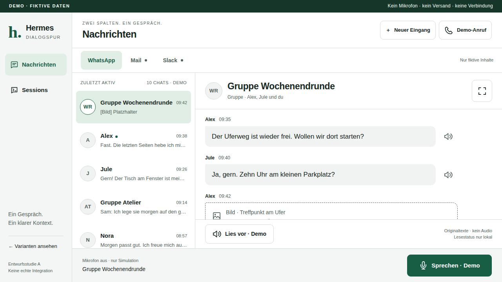
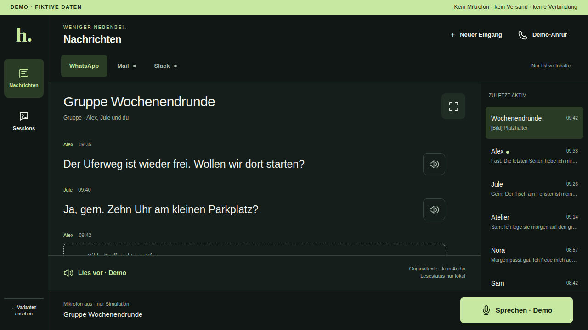
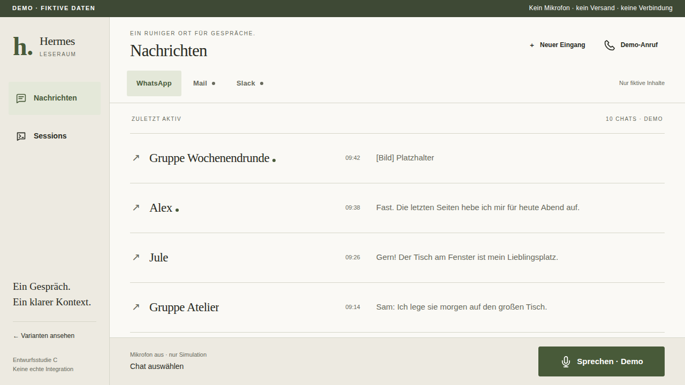

A
Dialogspur

Übersicht bleibt im Bild.
Die vertraute Inbox: vollwertige Chatliste und Gespräch nebeneinander. Am stärksten beim schnellen Wechsel zwischen mehreren Konversationen.
Dialogspur ausprobierenKommunikations-Dashboard · Entwurfsvergleich
WhatsApp zuerst. Sessions in Reichweite.
Ein Live-Anruf nur, wenn er gebraucht wird.
Drei eigenständige Anordnungen – alle anklickbar, alle ausschließlich simuliert.

Die vertraute Inbox: vollwertige Chatliste und Gespräch nebeneinander. Am stärksten beim schnellen Wechsel zwischen mehreren Konversationen.
Dialogspur ausprobieren
Große Originaltexte, schmale Recents-Spur, eine klare Antwortaktion. Die stärkste Gewichtung für kurze Blicke und ein Gespräch nach dem anderen.
Fokus ausprobieren
Kein permanenter Split: die Liste weicht dem gewählten Gespräch. Mehr Ruhe und Textbreite, dafür ein zusätzlicher Schritt beim Wechsel.
Leseraum ausprobierenFokus gibt dem eigentlichen Inhalt die meiste Fläche, ohne die jüngsten Gespräche zu verstecken. A ist die vertraute Alternative; C testet die Grenze zwischen Ruhe und zusätzlicher Navigation.
Keine echte Integration, keine privaten Inhalte, keine Fahrzeugprüfung. Die Browser-Probe ist ein separates Werkzeug; diese Entwürfe aktivieren niemals Mikrofon oder Audio.